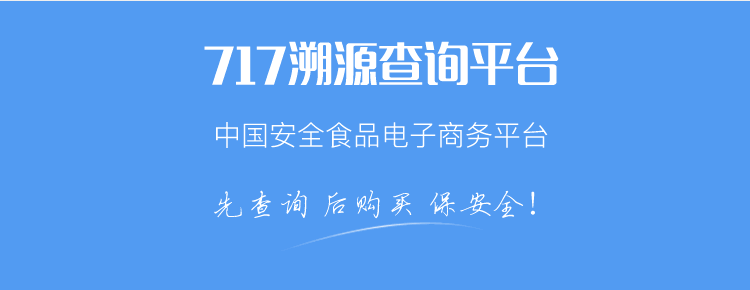
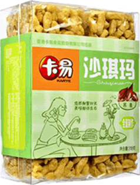
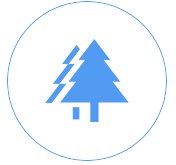
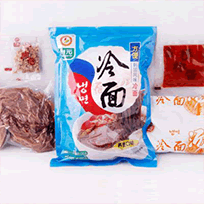

溯源查询

溯源档案：
1.消费者一码/一键溯源
消费者使用手机扫描产品包装上的二维码，或者登陆 717商城点击溯源查询即可快速查看丰富详尽的农产 品档案
2.生产者品牌展示
通过溯源系统的管理平台，生产者自行维护产品以及 企业基本信息，生产环境、生产过程、实时视频信息 等，建立完善丰富的农产品档案
3.监管者全程追溯
监管部门或其他监管者可通过溯源系统对进驻717商 城溯源平台的相关农产品以及生产者进行种植过程的 全程监督，可以追根溯源，在一定程度上可保障食品 的安全。
卡易 荞麦沙琪玛 溯源档案

卡易 荞麦沙琪玛
品种
饼干糕点
产品名称:卡易 荞麦沙琪玛
条形码:1234567890987
产品价格：108.00
安全品质:良好
所属商家:凯盛旗舰店
上市时间
2017/02/28
产品规格:380g/袋
保质期:12个月
产地:内蒙古和林格尔经济 开发
内蒙古阳光满分健康食品有限公司
营业执照已验证
查看
负责人
王凯
地址
内蒙古和林格尔经济开发区
地图
溯源档案
档案完整度

原料
原料
原料
原料
产品认证
绿色食品认证
已检测
产品简介
卡易荞麦沙琪玛是一种休闲辅食，可以 当做早餐，健康又美味。
公司简介
内蒙古阳光满分健康食品有限公司，旨在利用 先进的物联网、移动互联网等技术改造、创新传统 食品行业，保证食品健康安全，实现其商品价值和 利润地提升。
购买信息
网店购买
实体店购买
销售联络方式
厂家资质
物流跟踪
其他溯源信息
该商家的其他商品

升元冷面 荞麦冷面黑龙江特产等等等等
升元冷面 荞麦冷面黑龙江特产等等等等
升元冷面 荞麦冷面黑龙江特产等等等等